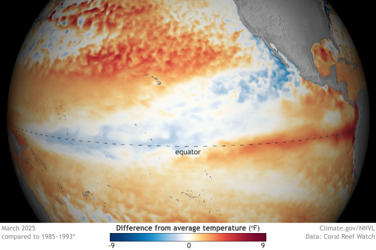
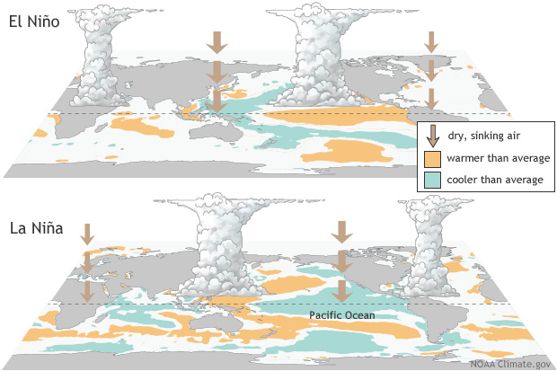
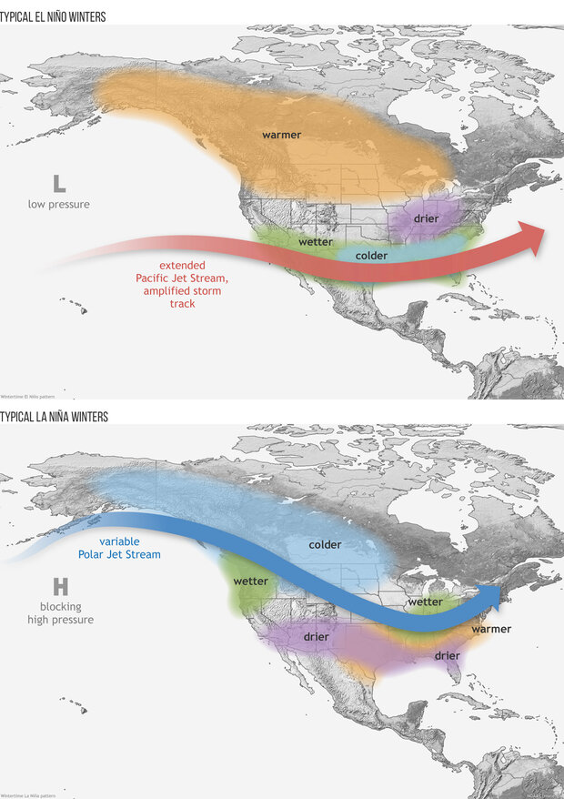
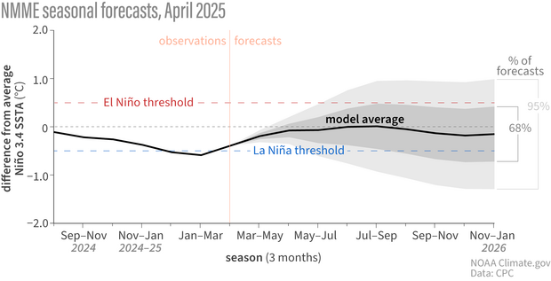
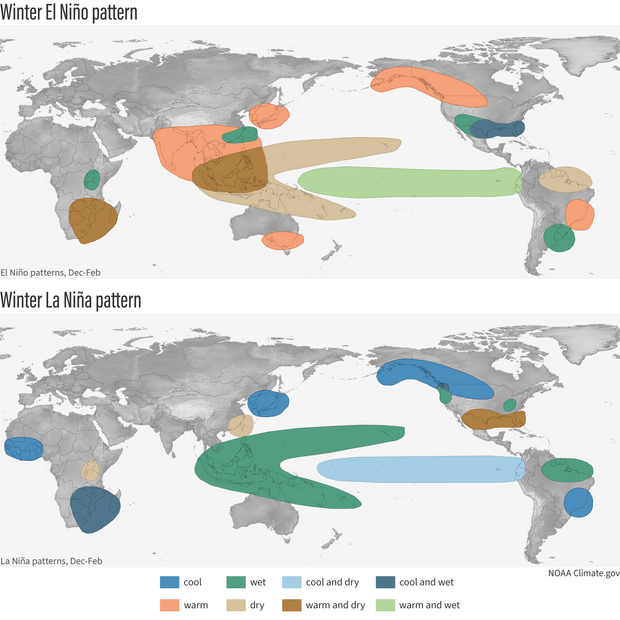

After just a few months of La Niña conditions, the tropical Pacific is now ENSO-neutral, and forecasters expect neutral to continue through the Northern Hemisphere summer.
More ENSO
What Is ENSO

El Niño and La Niña are the warm and cool phases of a natural climate pattern across the tropical Pacific known as the El Niño-Southern Oscillation, or “ENSO” for short. The pattern shifts back and forth irregularly every two to seven years, bringing predictable changes in ocean temperature and disrupting the normal wind and rainfall patterns across the tropics. These changes in the seasonal climate of the world's biggest ocean have a cascade of global side effects.
More About el Niño
Typical U.S. impacts

La Niña has ended, and the tropical Pacific is now in a neutral state—neither La Niña nor El Niño. Without those strong patterns influencing the atmosphere, it’s harder to anticipate seasonal shifts in rain, storms, or temperatures. Neutral likely lasts through fall.
More U.S. impacts
More About el Niño
Global Resources
- ENSO @ the Australian Bureau of Meteorology
- ENSO @ the World Meteorological Organization
- ENSO @ the International Research Institute for Climate & Society
- ENSO @ Instituto del Mar del Perú (IMARPE) (Spanish)
- ENSO @ the Centro Internacional para la Investigación del Fenómeno de El Niño (CIIFEN) (Spanish)
ENSO Blog

April 2025 ENSO update: La Niña has ended
Global Impacts

ENSO conditions can affect the climate over sizable portions of the globe, including regions far removed from the tropical Pacific Ocean. El Niño and La Niña have weaker impacts during Northern Hemisphere summer than they do in winter.
More About el Niño
ENSO Videos Promotional Section
ENSO Videos
Featured Resources & Articles
Understanding the ENSO Alert System
On the second Thursday of each month, scientists with NOAA’s Climate Prediction Center in collaboration with forecasters at the International Research Institute for Climate and Society (IRI) release an official update on the status of the El Niño-Southern Oscillation (ENSO). Here is a description of the categories and criteria they use.
- Watch: Issued when conditions are favorable for the development of El Niño or La Niña conditions within the next six months.
- Advisory: Issued when El Niño or La Niña conditions are observed and expected to continue.
- Final advisory: Issued after El Niño or La Niña conditions have ended.
- Not Active: ENSO Alert System is not active. Neither El Niño nor La Niña are observed or expected in coming 6 months.
{kind=link}
Summary of NOAA decision process in determining El Niño conditions. NOAA Climate.gov drawing by Glen Becker and Fiona Martin.
{kind=link}
Flowchart showing decision process for determining La Niña conditions. Figure by Fiona Martin, adapted by Climate.gov.
El Niño criteria
- Average sea surface temperatures in the Niño-3.4 region of the equatorial Pacific Ocean were at least 0.5°C (0.9°F) warmer than average (5°N-5°S, 120°W-170°W) in the preceding month, and
- the anomaly has persisted or is expected to persist for 5 consecutive, overlapping 3-month periods (e.g., DJF, JFM, FMA, etc), and
- the atmosphere over the tropical Pacific exhibits one or more of the changes commonly associated with El Niño:
- weaker than usual easterly trade winds,
- reduced cloudiness and rainfall over Indonesia and a corresponding increase in the average surface pressure, or
- increased cloudiness and rainfall in central or eastern part of the basin and a corresponding drop in the average surface pressure.
{kind=link}
La Niña criteria
- Average sea surface temperatures in the Niño-3.4 region of the equatorial Pacific Ocean (5°N-5°S, 120°W-170°W) were at least 0.5°C (0.9°F) cooler than average in the preceding month, and
- an average anomaly of at least -0.5°C has persisted or is expected to persist for 5 consecutive, overlapping 3-month periods (e.g., DJF, JFM, FMA, etc), and
- the atmosphere over the tropical Pacific exhibits changes commonly associated with La Niña, including one or more of the following:
- stronger than usual easterly trade winds,
- an increase in cloudiness and rainfall over Indonesia and a corresponding drop in average surface pressure,
- a decrease in cloudiness and rainfall in the eastern tropical Pacific, and an increase in the average surface pressure.